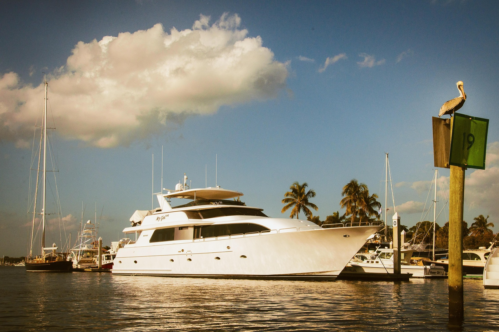
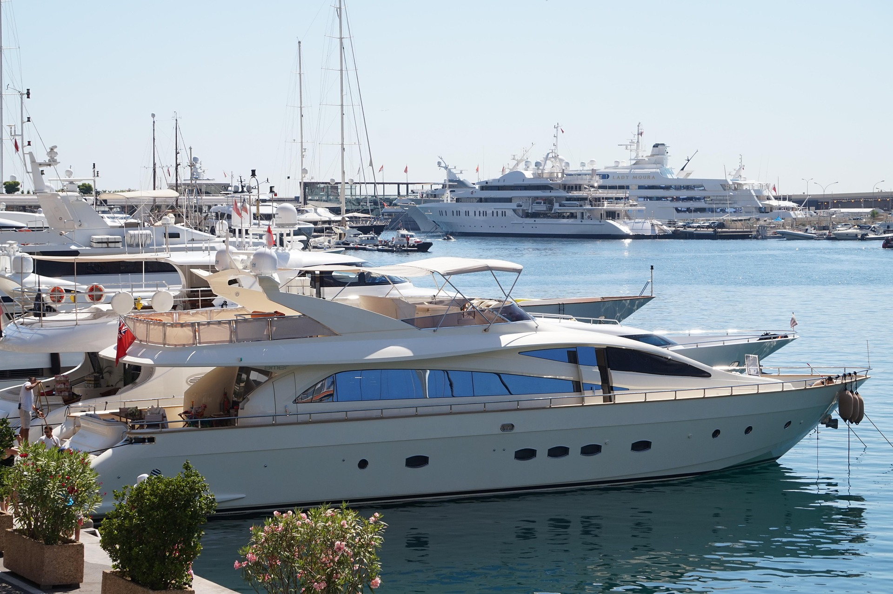
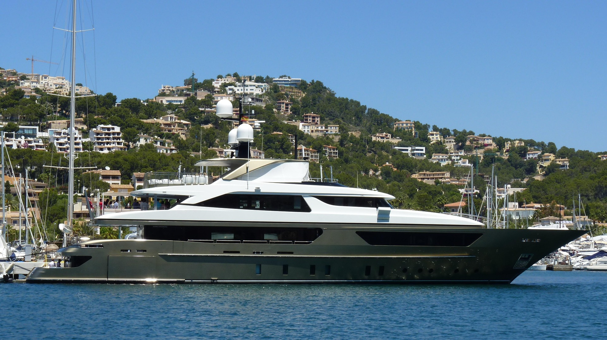
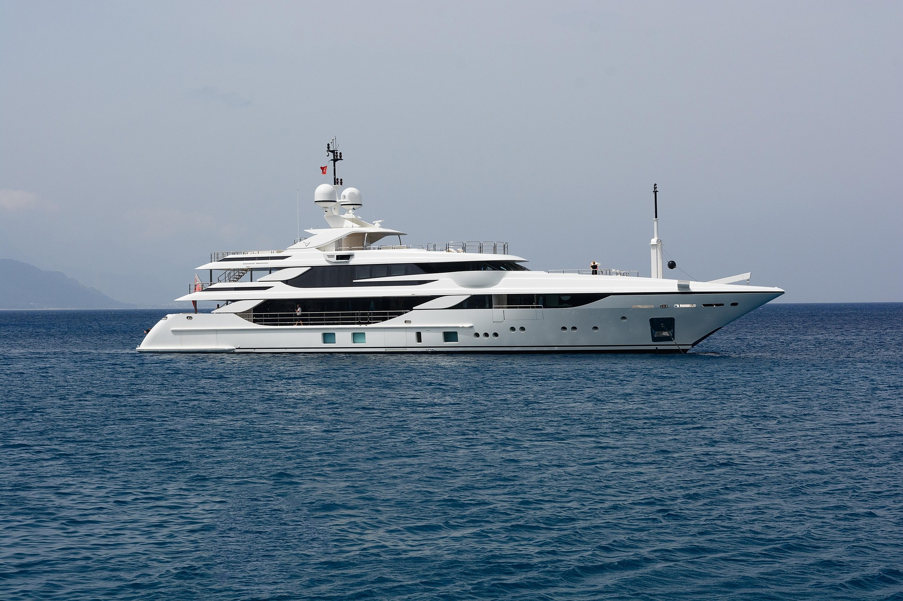

Routes · Vessels · costs · Insider Intelligence · 2025
Explore the FleetYacht charter Mallorca to Formentera is the defining maritime experience of the Western Mediterranean. Gliding across turquoise shallows, anchoring in coves inaccessible by road, and waking to a Balearic dawn — this is luxury at its most essential.
Whether you seek a high-performance catamaran for a private family week or a fully crewed superyacht for an island-hopping voyage, the passage delivered by Elite Luxury Bookings remains peerless.

Formentera, consistently ranked among the world's most beautiful island ecosystems, is the "Caribbean of Europe." Its beaches, Ses Illetes and Migjorn, are best experienced from the deck of a private vessel, bypassing the commercial ferries for absolute freedom.

Palma Marina south-southwest toward Formentera. A 75-nautical mile passage that takes approximately 10–12 hours under sail. Optimal for those maximizing their time at the destination.
A multi-day voyage via the Cabrera Archipelago National Park and the Ibiza south coast. Widely considered the most scenic route in the Balearics.
Departing from Portocolom on Mallorca's raw eastern coastline. This reduces passage time and awards more days exploring Formentera’s 69-km shoreline.
A sunset departure from Palma, navigating the Balearic Channel by moonlight to arrive at Ses Illetes for a sunrise breakfast.
A 14-day master itinerary: Mallorca → Menorca → Ibiza → Formentera. Over 300 nautical miles of total maritime discovery.
Following Mallorca’s south shore with an overnight anchorage at the secluded Es Trenc beach before the final crossing.
Utilizing a private motor yacht to cover the distance in under 4 hours, perfect for short-term luxury weekend escapes.

| Category | Guest Capacity | Daily Rate From | Advantage |
|---|---|---|---|
| Luxury Catamaran | 8–12 Guests | €1,500 | Stability & Space |
| Performance Monohull | 4–8 Guests | €800 | Authentic Sailing |
| Motor Superyacht | 10–14 Guests | €2,500 | Speed & Luxury |
| Classic Gulet | 12–20 Guests | €2,000 | Group Events |
*Rates exclude fuel, provisioning, and local marina fees which typically account for 20-30% of total charter costs.
Depart Palma late morning. Sail east along the dramatic southern coastline. Overnight at anchor in the natural harbor of Portocolom.
Enter the protected National Park. Snorkel the marine caves and hike to the 14th-century fortress for sea-lane views.
The principal passage. Navigate 42 nautical miles southwest to Ibiza Town. Dalt Vila dinner at sunset.
Day sailing past Es Vedrà. Anchor at Cala Vadella for swimming and paddleboarding in crystalline waters.
The defining moment. Drop anchor at the world-famous Ses Illetes for lunch at Beso Beach or Juan y Andrea.
Circumnavigate the island. Far de la Mola and the white sands of Llevant. Sundowners at anchor.
Slow return to Mallorca or extension to the north coast. Final farewell to the Balearic blues.
Ses Illetes requires advance anchoring permits during July and August. We handle all documentation 4–6 months in advance for our clients.
The Balearic Channel is subject to sudden wind changes. Always consult Windy.com or trust your local ELB skipper’s intuition.
Many Formentera restaurants provide tender services. Signal with your flag or use Channel 16 if specified in your pilot book.

Yes, an ICC or RYA Day Skipper is mandatory for Spanish waters. Alternatively, a professional skipper can be added to any booking.
Catamarans are ideal due to their shallow draft, allowing you to anchor closer to the pristine Formentera shoreline than monohulls.